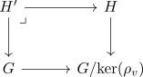

simple representation of a supersolvable group is monomial
Proposition
Let $G$ be a finite supersolvable group, then any simple representation is monomial representation.
Proof
Proof by induction, order of $G$
induction basis
for cyclic groups clear.
induction step
Consider $V$ simple. Suppose $G$ was not faithful representation, i.e. $\rho_{v}: G \rightarrow \mathrm{End}(V)$ is not injective and hence factors as $G/\mathrm{ker}(p) \rightarrow \mathrm{End}(V)$. Then $V$ is restricted from $G/\mathrm{ker}(\rho_{V})$ which by incdution is induced from a $1$ dimensional subgroup.

So $\mathrm{Ind}_{
or <beck chevalley> condition.
So we can write $V$ as $\mathrm{Ind}_{H}^{G}(W)$ where $W$ is 1-dimensional.
Hence we may assume that $\rho_{V}$ is faithful. If $G$ is an abelian group, then we are done (cf. complex, simple representations of finite abelian groups).
Now we may pick an $A \subseteq G$ normal subgroup such that $A \not\subseteq Z(G)$ (cf. nontrivial abelian normal subgroup of a nonabelian supersolvable group).
Now consider $\rho_{V}: G \rightarrow \mathrm{End}(V)$. Note some $\rho_{V}(a)$ does not act as a scalar, otherwise the image of $A$ would lie in the center of $\mathrm{End}(V)$ and hence $A$ would lie in the center of $G$.
Now we consider the restriction of $V$ ot $A$ and observe that if it was isotypic, each $\rho_{V}(a)$ would act as a scalar. (???)
So necessarilay there exists an $A \subseteq H \subsetneq G$ such that $V = \mathrm{Ind}_{H}^{G}(W)$ where $W$ is simple By induction $W = \mathrm{Ind}_{K}^{H} \mathbb{C}_{\mu}$ where $\mathbb{C}_{\mu}$ is a 1-dimensional representation associated to $\mu: C \rightarrow \mathbb{C}$. But then $V = \mathrm{Ind}_{H}^{G} \mathrm{Ind}_{K}^{G} \mathbb{C}_{\mu} = \mathrm{Ind}_{K}^{G} \mathbb{C}_{\mu}$. Hence by simple representation is induced or isotypical